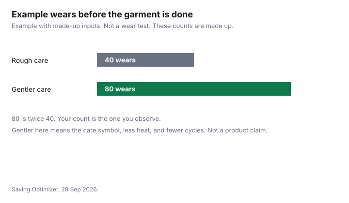

Clothing · Canada
Make Clothes Last Longer: Washing, Drying and Storage Habits That Save Money
To make clothes last longer, wash them less often, turn them inside out, and skip the tumble dryer when the care symbol says so. In Canada, care labelling is voluntary, but a label that is printed must not be false or misleading. Clothes fail in the washer and the dryer more often than they fail in the closet. This page is about the garment, not the detergent price and not the kilowatt-hour. Those bills are already written: detergent cost per load, detergent sheets, cold-water laundry, and dryer energy. What follows is how to read a Canadian care label and which habits reduce abrasion, heat, and moth damage. The Competition Bureau's guide says care information is not mandatory. When it is provided, it must not be false or misleading and it must reflect an appropriate method of care. The Office of Consumer Affairs still publishes the symbol guide, and it notes that the national standard was withdrawn in October 2017. The chart is an example with made-up inputs.
Key takeaways
- Care labelling is voluntary. If a dealer prints it, the Competition Bureau guide says it must not be false or misleading and must match an appropriate method. Words may be English or French. Quebec has extra French-language rules.
- The Office of Consumer Affairs guide, checked 29 Sep 2026, groups symbols into wash, bleach, dry, iron, and professional cleaning. It says the Care Labelling of Textiles national standard was withdrawn in October 2017. The temperatures below are from that information guide, not a new regulation.
- Wash less often, turn clothes inside out, and skip the tumble dryer when the symbol says so. Heat limits on the guide run from tumble drying not exceeding 75 degrees Celsius at the high setting down to do-not-tumble.
- Detergent unit prices and dryer energy are other guides. This page does not repeat them and does not price a hanger or a moth product.
- A button or a hem is a repair. A thin seat or a set-in smell often is not. The wear bars on the chart are made up.
Read care labels properly
The Competition Bureau's Guide to the Textile Labelling and Advertising Regulations says fibre-content labelling is the mandatory core for prescribed consumer textile articles: a dealer may not sell, import, or advertise those articles unless they are labelled with fibre content and dealer identification as the Act and Regulations require. Care information is different.
Section 3 of that guide says care words or symbols, Canadian, ASTM, or international, are not mandatory. Where care information is provided, section 5 of the Act requires that it not be false or misleading and that it accurately reflect an appropriate method of care. Written instructions may be in English or French. Quebec has additional French-language requirements. The Bureau points readers to the Office québécois de la langue française for those. The guide also says the national standard CAN/CGSB-86.1-2003 superseded the 1991 standard, care labelling is voluntary, and the Bureau left businesses to decide whether to adopt the December 2003 standard.
The Office of Consumer Affairs guide, checked 29 Sep 2026, says its material is for information only and that the Care Labelling of Textiles national standard was withdrawn by the Canadian General Standards Board in October 2017. Five basic symbols still identify washing, bleaching, drying, ironing, and professional cleaning. Temperature appears in degrees Celsius or as dots. Bars show how severe the treatment is. Other marks cover hand washing and natural drying: dry flat, line dry, drip dry, and dry in the shade. A garment can follow an older symbol set or words. If the symbol and the words disagree, do not guess. Use the more cautious reading, or ask the seller, because a false care claim is the dealer's problem under the Act and a ruined shirt is yours.
Washing less and washing gentler: loads, bags, inside-out
Every cycle is abrasion and agitation. Wash when the garment is dirty or smells, not because the calendar says Tuesday.
Full loads, not stuffed loads, let clothes move without grinding. Turn knits and printed shirts inside out so the face of the fabric is not the face that hits the machine. A mesh bag keeps straps and tights from wrapping around the agitator. This guide does not cite a price for a bag. Use one you have, or skip the purchase until you see a price you accept. Zippers closed and hooks fastened snag less. The water temperature that the symbol allows is the maximum, not a target. The cold-water guide is where the energy arithmetic lives. Do not import a cents-per-load figure from the detergent guides into this decision. A gentler cycle is a garment decision even when the energy saving is small.
Drying: air-drying vs the dryer and the effect on fabric
The consumer-affairs guide's tumble symbols include high heat not exceeding 75 degrees Celsius, medium not exceeding 65, low not exceeding 55, tumble at any heat, tumble with no heat or air only, and do not tumble dry. Natural drying on the same page includes line dry after excess water is removed, drip dry from soaking wet, dry flat, and dry in the shade as an added mark.
Do not dry is used with do not wash. Heat is what shrinks some fibres, sets stains, and speeds elastic failure. If the symbol bars the dryer, air-dry. If the symbol allows low heat, low heat is the permission, not a suggestion to use high because you are late. The energy cost of the machine is the dryer guide, including whether a heat-pump dryer is worth it. This page does not recalculate that bill. Air-drying costs time and space. It does not cost a product this page priced.
Pilling, stains and odour fixes
Pilling is fibre ends that tangle on the surface. Less abrasion, which is the inside-out wash and the lower dryer heat, is the prevention this page can stand behind without a lab test.
A fabric shaver can cut the pills off. Go slowly so you do not cut the cloth. Stains should be treated before heat. The dryer sets many of them. Follow the care symbol for bleach: the guide lists any bleach when needed, non-chlorine bleach only, and do not bleach. Do not upgrade a do-not-bleach mark because a bottle claims to be gentle. Odour that survives the wash the label allows is a reason to rewash once, then to stop. This guide does not cite a tested vinegar or baking-soda recipe, so it does not give one. Dry the garment fully before it goes away. Damp storage is how mildew starts.
Storage: hangers, folding knits, moths
Hang woven shirts and trousers if the shoulders are not stretching on the hanger you own. Fold knits.
A hanger pulls the shoulder of a sweater into points, and the stretch does not come back in the wash. What you can do with no product is wash or dry-clean winter wool before you pack it, because moths go after soil and food residue, then keep the clean knits in a closed container in a cool, dry place, and look at them once in the season. A hole you find in October was laid earlier. The thrift guide's rule still applies: a moth-holed sweater is not a repair project unless the hole is somewhere you will actually patch.
Quick repairs: buttons, hems, small holes
A loose button and a hem that has dropped are repairs a household can do with needle and thread it already has. Match the thread colour in daylight.
A small hole in a seam can be closed the same way. A hole in the middle of a knit, a broken coat zipper, or a worn-through seat is usually the end of cheap repair. This guide does not cite a tailor's price list, so it does not tell you when a shop is worth it. Compare the quote you get with the cost of a replacement you would actually buy. Activewear heat and fabric softener are in the activewear guide, because those fabrics pill and lose stretch under heat. The same dryer limits above still apply.
| Family | What the guide describes |
|---|---|
| Wash | Machine washes not exceeding 95, 70, 60, 50, 40, or 30 degrees, plus a normal any-temperature wash. Hand wash not exceeding 40 or 30 degrees. Do not wash. |
| Bleach | Any bleach when needed. Non-chlorine bleach only. Do not bleach. |
| Dry | Tumble high not exceeding 75 degrees, medium not exceeding 65, low not exceeding 55, any heat, no heat or air only, or do not tumble. Also line dry, drip dry, dry flat, dry in the shade, and do not dry with do not wash. |
| Iron | High not exceeding 200 degrees, medium not exceeding 150, low not exceeding 110, or do not iron or press. Steam may be used on the ironing symbols that allow ironing. |
| Dry clean | Normal cycle, any solvent except trichloroethylene. Normal cycle, petroleum solvent only. Do not dry-clean. |
| Habit | Why it helps | Cost to do it |
|---|---|---|
| Wash less often | Fewer cycles mean less abrasion and less heat. | No product. Time only. Detergent math stays on the detergent guides. |
| Inside out, closed zippers | The face of the cloth and the hardware take less damage. | No product. |
| Mesh bag for tights and straps | Keeps small items from snagging. | Use a bag you have, or decide after you see one. |
| Air-dry when the symbol says so | Avoids tumble heat the guide caps or forbids. | Time and space. Dryer energy is the other guide. |
| Fold knits | Stops hanger stretch at the shoulder. | No product. |
| Clean wool before summer storage | Removes the soil moths use. A closed container then keeps new pests out. | The wash is the care label's wash. |
| Sew a button or a hem | Returns a wearable garment without a new purchase. | Needle and thread you already have. |

Sources
- Competition Bureau, Guide to the Textile Labelling and Advertising Regulations, section on care information, checked 29 Sep 2026. Care labelling is not mandatory. Where provided, it must not be false or misleading and must reflect an appropriate method. English or French. Quebec French-language rules noted. CAN/CGSB-86.1-2003 described as voluntary, published December 2003.
- Office of Consumer Affairs, Guide to Apparel and Textile Care Symbols, ised-isde.canada.ca, checked 29 Sep 2026. Information only. National standard withdrawn October 2017. Five symbol families and the temperatures quoted above.
- Those topics stay on the linked guides or are marked as made-up inputs.
Frequently asked questions
How can I make my clothes last longer?
Wash them less often, follow the care symbol, turn knits inside out, and do not tumble-dry what the label bars. Fold sweaters instead of hanging them, and fix a button before the shirt leaves the rotation. Detergent prices and dryer energy are separate guides. The chart's 40 and 80 wears are made-up inputs, not a test result.
Does the dryer ruin clothes?
Heat is the risk the symbol system is built to limit. The consumer-affairs guide describes tumble drying not exceeding 75, 65, or 55 degrees Celsius, no-heat air, and do not tumble dry. High heat can shrink, set stains, and tire elastic. If the symbol forbids the dryer, air-dry. The energy bill for running the machine is the dryer guide, not this page.
How do I stop sweaters pilling?
Reduce abrasion: wash inside out, use a gentler cycle, and keep high tumble heat off if the symbol allows a lower setting or none. A fabric shaver can cut existing pills. No brand was tested. Fold the sweater for storage so the shoulder does not grow points on a hanger. This is a method, not a laboratory result.
What do Canadian care-label symbols mean?
Five families cover wash, bleach, dry, iron, and professional cleaning, on the Office of Consumer Affairs guide checked 29 Sep 2026. Temperatures are in degrees Celsius or shown as dots, and bars mark a harsher treatment. Care labelling is voluntary, and the national standard was withdrawn in October 2017. If words and symbols disagree, use the more cautious reading. Quebec has extra rules for French.
How do I store winter clothes to avoid moths?
Wash or dry-clean wool before you pack it, then keep it in a closed container in a cool, dry place and check it during the off-season. This guide does not test cedar, herbs, or a pesticide, and it does not price one. A hole found in the fall started earlier. A sweater that already has holes is a skip unless you will actually patch it.
Researched and drafted with AI assistance and fact-checked against official Canadian sources. How we create content.
Disclosure: Amazon.ca storefronts are an offer type. Saving Optimizer may earn a commission if a partner link is added later. No partnership is claimed with Amazon. Education only. This page does not name a best detergent, hanger, or repair kit.